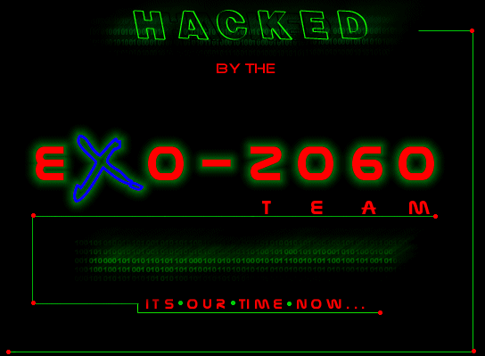
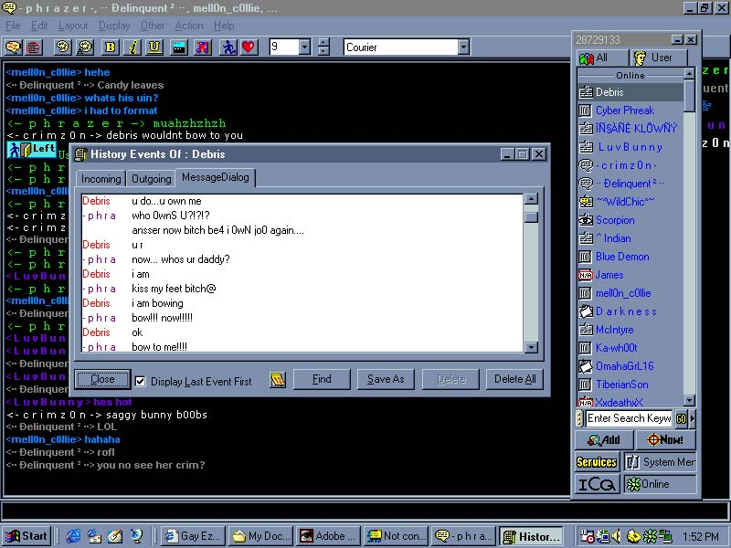

We know this is a gay hypermart site but in the other hand NC-101 is a gay group
eXo-2060 is now your god-father.We now own you...Hello Mr.Debris.. muahzhzzh ,
DEBRIS quote "Its easy to pick up 12yr old blind girls...i thank aol for that"
We want to say FUCK YOU to the following groups:The Goats
Let's hear what Dr.Debris , SillyBilly , 0pt1k ,Ginuwine , and some of their families members have to say of how thankful they are for AOL


lo0k how gay Debris Bowed 2 - p h r a z e r - ....... muhahzhzhzhzh!